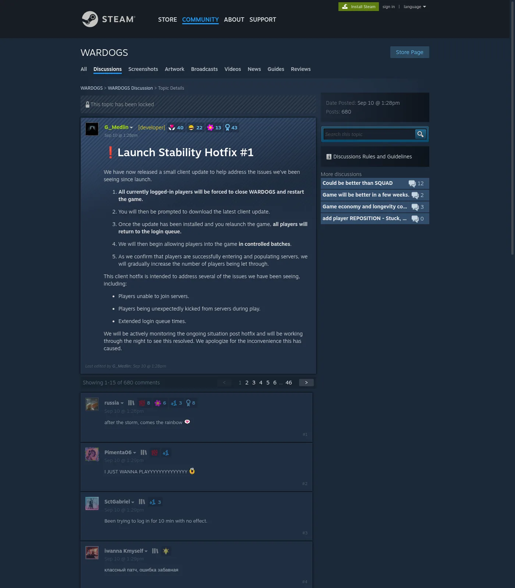
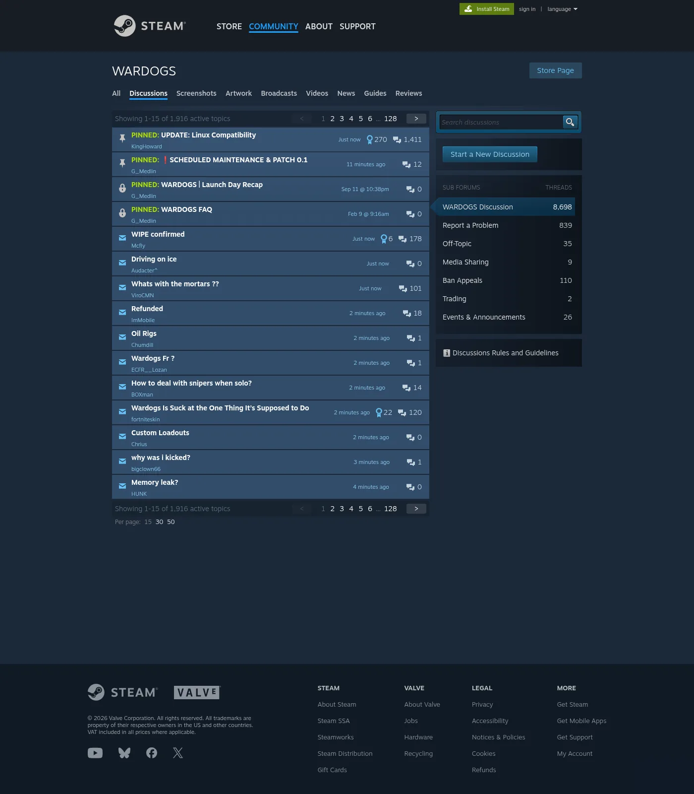

Last checked 14 Sep 2026 · Steam Early Access. Guides may change after patches.
WARDOGS Servers Down, Queue, or Access Denied on Steam (EA Status Hub)
TL;DR: Launch day (2026-09-10) slammed servers past ~300,000 concurrent (PC Gamer; secondary SteamDB cites ~337k). Bulkhead took services offline, posted on X, and shipped Launch Stability Hotfix #1. Expect wave queues, then — for some players — Access Denied / failed to authenticate / WD-LO14 after the update. CM notes (via Bisect): thousands filtering in slowly. This hub is status triage, not a fake “FIXED” banner. JOIN TIMEDOUT → Error 1628505091. Crash / Elytra → Crashing. Full code table → Error Codes Hub.
Last checked 2026-09-13 (Early Access).

Status habit (every incident)
Never publish a green “servers fixed forever” line. Use a dated checklist:
| Check | Where | Result | Time (TZ) |
|---|---|---|---|
| Steam News / WARDOGS announcements | Steam App 1867240 news | As of 2026-09-13: SCHEDULED MAINTENANCE & PATCH 0.11 (servers down ~1h Mon Sep 14 for server-browser update) + historical Hotfix #1 | |
| Hotfix / status Steam discussions | e.g. Launch Stability Hotfix #1 thread | Active flood vs quiet | |
| Official X | https://x.com/WARDOGS | Latest apology / wave note | |
| Official Discord (public invite) | https://discord.gg/TxKKdspkCp — live 2026-09-13 (Discord API: guild WARDOGS, ~365k members) | Announcement channel | |
| Your own test: queue / join / error code | In-client | Connected / queued / exact code | |
| Friends in same region | Voice / chat | Can join? Y/N |
Editorial status line (update live): As of 2026-09-13, Early Access is live; launch-day outage and Hotfix #1 are historical. Steam News also lists SCHEDULED MAINTENANCE & PATCH 0.11 for ~1 hour on Mon Sep 14, 2026 (server browser / community servers focus) — not titled “Hotfix #2.” Whether your region is healthy now → re-run the table above. Do not copy Day-1 headlines as current truth.
CB2 → EA calendar caveat: Closed Beta 2 ended ~2026-09-06; EA unlocked 2026-09-10. Gaps in that window were not a permanent “servers dead” state. After unlock, re-evaluate with live sources only.
Official status channels
| Channel | URL | Use for | Caveat |
|---|---|---|---|
| Steam News (App 1867240) | Store → News / Steam client | Patch + Hotfix posts | Always date-stamp |
| Steam Discussions | Hotfix #1: https://steamcommunity.com/app/1867240/discussions/0/562541634873654728/ | Player flood vs quiet | Community ≠ official def |
| X / Twitter | https://x.com/WARDOGS (PC Gamer quoted launch apology) | Short status | Screenshots age poorly |
| Discord | https://discord.gg/TxKKdspkCp | CM notes / tickets | Invite resolved live 2026-09-13 (guild WARDOGS); may still rotate later |
| Steam Store social row | Discord, X, TikTok, Facebook, Instagram, QQ on store page | Discover official handles | Not a live status feed |
Launch outage timeline
| When | What happened | Source |
|---|---|---|
| 2026-09-10 (EA unlock) | WARDOGS hits Steam top seller; peak over 300,000 concurrent (PC Gamer). Secondary cites: SteamDB ~337,157 / press “nearly 338,000” | Press + SteamDB cites |
| Same day | Players stuck in login queue; services slammed | Press + community |
| Same day | Bulkhead takes servers offline to work a fix; X apology — issue “wasn’t present in the previous beta” | Press quoting studio X |
| Same day (CEO video, per PC Gamer) | Long queues partly framed as rate-limited by Valve (CEO Joe Brammer) — press-reported (PC Gamer launch article); not a proven engineering root-cause for your error | Press |
| ~1:02 PM PDT | “Please prepare to download a new Steam client… logged out… server queue… waves” (PC Gamer) | Press quoting studio |
| Sep 10 ~1:28pm (Steam) | Launch Stability Hotfix #1 — G_Medlin client update + controlled batches (~200+ MB per mp1st) | Official Steam post |
| Immediately after hotfix | Community reports: Access Denied, authentication failed, WD-LO14-c70b81e405df |
Community (not official defs) |
| PC Gamer update ~3:13 PM PDT | Reporter joined a full match; “plenty other servers” looking up | Press snapshot — time-bound |
| Launch window (Bisect) | CM LOSSY: thousands in login queue; some players put to back of the queue; response “much, much larger than the Beta” | Press quoting Discord CM |
Hotfix #1 — player-facing steps (studio)
- Close WARDOGS (forced for logged-in players).
- Download the latest client update.
- Relaunch → return to login queue.
- Studio admits players in controlled batches, increasing throughput as servers populate cleanly.
- Studio: actively monitoring overnight; apology for inconvenience.
Intended targets (studio list): unable to join · unexpected kicks · extended login queues.
Press add-on (mp1st): developers may perform another server restart after the client hotfix — unexpected logout can be that restart, not a ban.
Symptom matrix: outage vs queue vs auth vs local
| You see | Lean | First move | Link |
|---|---|---|---|
| Everyone offline; official “working on it” | Service outage | Wait; do not reinstall | This page |
| Long login queue, no error yet | Wave / capacity | Stay in queue; avoid spam cancel | This page |
1147405316 — Server queue is full |
Capacity on that server | Other server / later | Error hub |
1628505091 — JOIN TIMEDOUT |
Join handshake timeout | Widespread vs local tree | 1628505091 |
| Access Denied (no ban reason) after Hotfix | Auth / wave gate (community) | Full Steam exit + retry later | This page |
| Failed to authenticate / online services | Auth spillover | Status → wait → then local | This page + Crash triage |
1147405308 (public lead: authenticate / queue) |
Auth / queue | Same as above | Error hub |
1147405307 + Cheating / Permanent / banned |
Account action | Screenshot + official appeal | Error hub |
WD-LO14-… (community post-hotfix) |
public lead — Steam Hotfix #1 reply WD-LO14-c70b81e405df; official meaning none found |
Do not invent meaning | Error hub + Crash |
| Crash dialog / Elytra / never reaches menu | Local client | Leave status hub | Crashing |
Queue / auth: symptom → step
| You see | More likely | Next | Don’t |
|---|---|---|---|
| Queue advances slowly; no error | Wave admission working as designed | Stay seated; screenshot position + clock | Cancel every minute |
| Queue kicks you to back (CM-reported pattern) | Overload / fair-share churn | Wait; re-check X/Discord once | Accuse ban |
| Auth error while friends still queued | Shared auth shard stress | Status check; Steam Exit once | GPU driver wipe |
| Auth error only on you; friends in-match | Account/client/local | Hotfix confirm → verify → Crash if launch fails | Spam requeue |
| Access Denied with Cheating + Permanent | Ban-style dialog | Error hub appeal path | “Unban tools” |
| Access Denied without ban fields | Auth/wave spillover | This ladder | Assume permanent ban |
| Blank browser after queue | Service / region | Status; one region check | Distant-region hop as first fix |
| Join timeout after successful queue exit | Handshake | 1628505091 | Stay only on this page |
Wave queue: do / don’t
| Behavior | Why |
|---|---|
| Stay in queue once you are in it | CEO comment (via PC Gamer): “I wouldn’t leave the queue” during rate-limit talk — still a press-reported tip, not a law |
| Finish Hotfix download before judging queue length | Old client + new gate = false negatives |
| Do not interpret “queue moved then kicked” as a ban | Post-hotfix kicks → auth/wave path first; CM also described back-of-queue placements |
| Screenshot queue position + clock if you need support later | Timezones matter for incident matching |
| Expect waves, not a single unlock | Studio: controlled batches, then gradual increase |

Access Denied / auth failed after Hotfix #1
Facts we can state: In the locked Hotfix #1 Steam thread, multiple players reported Access Denied, authentication doesn’t work, server auth failed, and failed to authenticate online services within minutes of the update. Separate posts mentioned Unable to launch with WD-LO14-c70b81e405df. Bisect (Sep 10) maps public lead 1147405308 to Failed to Authenticate With Online Services and quotes CM LOSSY on Discord about thousands filtering into servers.
Facts we must not invent: Official glossary entries for those strings; exact retry timers; “Valve rate-limit” as proven cause of your Access Denied; Discord ticket counts as forever-true.
Auth / Access Denied ladder
| # | Step | Notes |
|---|---|---|
| 1 | Confirm Hotfix client finished downloading | Steam → Downloads (mp1st: ~200+ MB class update) |
| 2 | Steam → Exit (full quit), relaunch Steam, launch WARDOGS once | Fresh ticket |
| 3 | Re-check X / Steam News / Discord for a known auth incident | If widespread → wait |
| 4 | Verify library ownership / correct Steam account | Wrong account ≠ outage |
| 5 | Retry after a cooldown (15–30+ min during waves) | Do not hammer |
| 6 | Only if services look healthy: verify game files | Last before reinstall |
| 7 | If crash/Elytra / WD-LO14 symptoms appear | Switch to Crashing |
| 8 | If explicit ban text appears | Screenshot → official appeal — not this ladder |
Ban ≠ every Access Denied. Explicit Reason: Cheating + Permanent + banned (public 1147405307 framing) is a different document — save it and use official support/appeal. Timeout and generic Access Denied are not that dialog.
Community paraphrases (Hotfix #1 thread — not definitions)
| Player report | Source | Triage |
|---|---|---|
| Kicked, then Access Denied after Hotfix | Steam Hotfix #1 replies | Auth/wave ladder |
| “failed to authenticate online services” after update | same | Treat like 1147405308 cluster |
| “server auth failed” | same | Servers hub, not Crash |
Rate-limit context (press-reported)
PC Gamer summarized a Bulkhead CEO video suggesting long queues were partly due to being rate-limited by Valve, with a desire for higher platform tiers. Quote (press): “I wouldn’t leave the queue, I’d just stay in.”
| Claim | Status |
|---|---|
| Press reported CEO mentioning Valve rate limits | Cite PC Gamer (2026-09-10) |
| Players should “just stay in queue” | Press-quoted advice; sensible during waves, not a forever rule |
| Buying a VPN bypasses Valve rate limits | Do not claim |
| CM “thousands in queue / some sent to back” | Bisect quoting LOSSY — capacity/ops signal, not ban |
Service-side ladder
| # | Step | Stop if |
|---|---|---|
| 1 | Confirm EA unlocked for your account/region | Pre-unlock calendar confusion |
| 2 | Official / Steam / X / Discord status check | Widespread → wait |
| 3 | Hotfix #1 close → download → relaunch | Update stuck → Steam restart |
| 4 | Sit wave queue; avoid spam | Auth Denied flood → cooldown |
| 5 | One alternate server if browser works | All servers fail → status |
| 6 | Full Steam Exit + single retry | — |
| 7 | Hotspot/Ethernet test only on local branch | See 1628505091 |
| 8 | Verify files | Still failing with crash → Crash page |
| 9 | Reinstall | Absolute last resort; never for capacity errors |
Decision tree: which Fix page?
Can’t play WARDOGS right now?
│
├─ Crash / black screen / won’t start / Elytra repair / WD-LO14?
│ └─ YES → ../wardogs-crashing/
│
├─ JOIN TIMEDOUT + 1628505091?
│ └─ YES → ../wardogs-error-1628505091/
│
├─ Explicit Cheating + Permanent + banned text?
│ └─ YES → ../wardogs-error-codes/ (appeal path) — not “wait it out”
│
├─ Queue / servers offline / Access Denied (no ban) / auth failed / queue full?
│ └─ YES → THIS PAGE (../wardogs-servers-down/)
│
└─ Unknown numeric code?
└─ ../wardogs-error-codes/ → then bounce to the matching spoke
Boundary cases
| Edge | Branch |
|---|---|
| Queue OK → join timeout | 1628505091 spoke |
| Auth dialog with no crash dump | Stay here |
| Auth dialog and crash dump / Elytra log | Crash spoke after one status check |
| Pre-Sep 10 “can’t connect” screenshots | Calendar, not evergreen outage |
| Friends in-match; you Access Denied without ban text | Local/account ladder (steps 1–6) before panic |
Support paste block
Game: WARDOGS (Steam) AppID 1867240
Client update / Hotfix #1: installed Y/N — date
Symptom: queue / Access Denied / auth failed / can’t connect / no servers / WD-LO14…
Exact on-screen text:
Time (timezone):
Region:
Widespread?: yes/no/unknown
Status checks done: Steam News / X @WARDOGS / Discord / friends
Already tried: Hotfix restart / Steam Exit / wait / verify
Screenshot: attached
Region and peak hours
| Pattern | Read | Action |
|---|---|---|
| Failures only at evening peak in your region | Capacity / route congestion | Off-peak retry; other server |
| Failures only on one named server | Session/instance problem | Pick another; don’t chase 1–2 slots |
| Failures everywhere + official quiet | Could still be regional ISP routing | Hotspot test; then wait |
| Friends join instantly; you never leave queue | Account/client/local path | Hotfix confirm + Steam Exit + verify |
| Pre-EA “can’t connect” screenshots from Sep 7–9 | Calendar gap, not evergreen outage | Ignore as current evidence |
| Post-Hotfix auth storm then quiet | Spillover cleared for many; not for all | Re-check live status before deep repair |
Do / Don’t for status incidents
| Do | Don’t |
|---|---|
| Date-stamp every “down” claim | Recycle Sep 10 headlines as today’s status |
| Keep Hotfix client current | Assume beta stability = EA stability |
| Separate queue full vs auth vs timeout | Call every failure a ban |
| Link Crash when the client dies locally | Change GPU settings to “fix” servers |
| Treat Valve rate-limit talk as press context | Promise VPN bypasses platform limits |
| Quote CM queue notes as ops context | Invent official error-code dictionaries |
FAQ
Q: Are WARDOGS servers down right now?
A: Re-run the status habit table (Steam News, Hotfix thread quiet vs flood, X @WARDOGS, Discord, your own join test). Launch-day downtime (Sep 10) is documented by PC Gamer + studio posts; that is not automatically true on 2026-09-13. Never trust an undated blog “FIXED” badge.
Q: How bad was launch concurrency?
A: PC Gamer: peak over 300,000 and Steam top seller. Secondary public cites put SteamDB near 337k–338k. Treat “over 300k” as the press-safe floor; exact SteamDB peak → cite SteamDB live if you need precision.
Q: Why was launch so rough after multiple betas?
A: Studio (via X, quoted by PC Gamer) said the issue “wasn’t present in the previous beta.” Final closed beta even invited players to “obliterate our servers.” Peak concurrency still overwhelmed live EA.
Q: What is Launch Stability Hotfix #1?
A: A Sep 10 client update from G_Medlin for unable-to-join, unexpected kicks, and extended queues, with controlled batch login afterward. mp1st described a 200+ MB download and possible further server restarts.
Q: Access Denied after the hotfix — am I banned?
A: Treat as auth/wave first unless the dialog explicitly states cheating/permanent ban language. Steam Hotfix replies (paraphrased) flooded with Access Denied / auth failed without ban fields. See Error hub for 1147405307 contrast.
Q: What does community manager LOSSY say about the queue?
A: Bisect quotes LOSSY: thousands in the login queue slowly filtering in; some players put to the back of the queue; response much larger than Beta — hang tight. That is ops messaging, not an error-code definition.
Q: Did Valve rate-limit WARDOGS?
A: PC Gamer reported CEO Joe Brammer comments suggesting rate limits contributed to long queues, plus “I wouldn’t leave the queue.” Treat as press-reported (not proven for your session). Do not claim a VPN bypasses platform limits.
Q: Should I reinstall because the queue is long?
A: No. Reinstalling does not add server capacity or raise platform rate limits.
Q: Where does JOIN TIMEDOUT go?
A: WARDOGS Error 1628505091.
Q: Where do Elytra / crash-to-desktop / WD-LO14 issues go?
A: Crashing or Won’t Launch — Elytra. Store feature tag (2026-09-13): Uses Kernel Level Anti-Cheat Elytra.
Q: Which official channels should I watch?
A: Steam News for App 1867240 (incl. Patch 0.11 maintenance notice), X https://x.com/WARDOGS, and Discord invite https://discord.gg/TxKKdspkCp (resolved live 2026-09-13 to guild WARDOGS).
Related
- Error 1628505091 / JOIN TIMEDOUT
- Error Codes Hub
- Crashing / Won’t Launch — Elytra
- How to Play — First Match — once you can connect
Sources
- PC Gamer — servers down / 300k launch rush (Sep 10, 2026): https://www.pcgamer.com/games/fps/wardogs-servers-go-down-as-over-300-000-people-rush-to-play-on-launch-day/
- Steam — Launch Stability Hotfix #1: https://steamcommunity.com/app/1867240/discussions/0/562541634873654728/
- mp1st — Hotfix / 200+ MB / extra server restart: https://mp1st.com/news/war-dogs-receives-hotfix-launch-day-players-encounter-server-instability-downtime
- BisectHosting — 1147405308 authenticate + CM LOSSY quote: https://www.bisecthosting.com/blog/wardogs-error-code-1147405308-failed-to-authenticate-with-online-services-what-it-means-how-to-fix
- GearUP — error code dialogs (capacity / timeout / ban framing): https://www.gearupbooster.com/blog/wardogs-error-codes.html
- Nerdschalk — 1628505091: https://nerdschalk.com/fix-wardogs-error-1628505091-failed-to-connect/
- ValoSettings — SteamDB peak cite ~337,157: https://www.valosettings.com/news/wardogs-server-status-is-wardogs-down-now/
- Steam Store — WARDOGS (Elytra, social links): https://store.steampowered.com/app/1867240/WARDOGS/
- X — @WARDOGS: https://x.com/WARDOGS
- Discord invite (public, confirm the invite is current): https://discord.gg/TxKKdspkCp